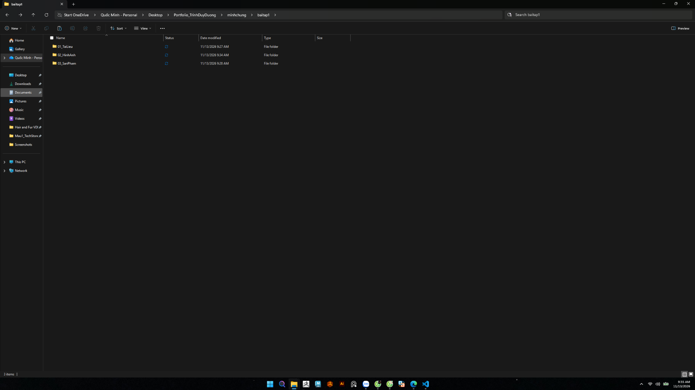
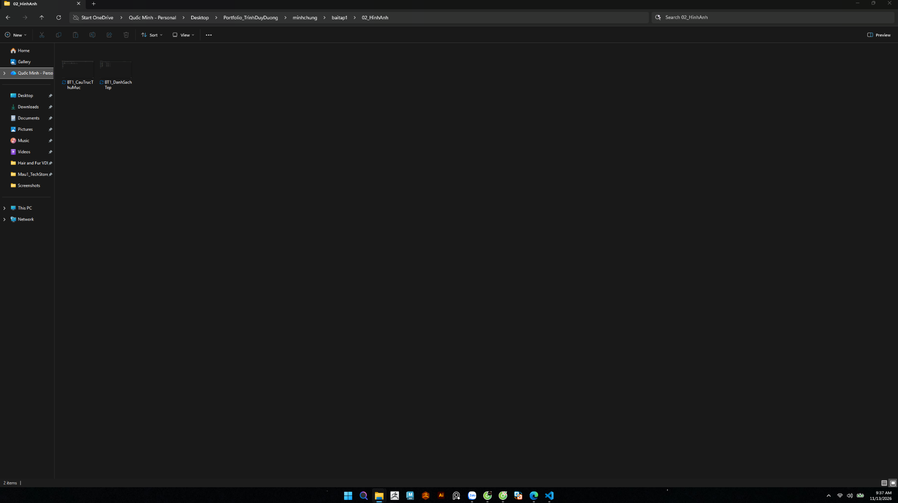

Thao tác cơ bản với tệp tin và thư mục
Tổ chức học liệu như tổ chức một bản tổng phổ: mỗi thành phần có vị trí, tên gọi và quy tắc riêng.
Mục tiêu
Tạo, đổi tên, sao chép, di chuyển, xóa và phục hồi tệp/thư mục trên Windows; thiết kế cấu trúc lưu trữ dễ tìm, dễ sao lưu.
Cấu trúc thư mục và cách tổ chức
ThucHanh_TrinhDuyDuong/ ├── 01_TaiLieu/ │ ├── BaiGiang/ │ └── TaiLieuThamKhao/ ├── 02_HinhAnh/ ├── 03_AmThanh/ ├── 04_SanPham/ └── 05_SaoLuu/
Quy tắc đặt tên
| Thành phần | Quy tắc | Ví dụ |
|---|---|---|
| Ngày | YYYYMMDD | 20261115 |
| Chủ đề | Không dấu, nối bằng dấu gạch dưới | GiaoDucAmNhac |
| Phiên bản | v01, v02... | v02 |
| Tên hoàn chỉnh | Ngày_Chủ đề_Phiên bản | 20261115_GiaoDucAmNhac_v02.docx |
Quy trình thực hiện
Tạo thư mục gốc
Tạo thư mục con
Đổi tên tệp
Sao chép và di chuyển
Xóa, khôi phục và kiểm tra
Kết quả thực hành
Cấu trúc thư mục được tổ chức theo từng nhóm tài nguyên: tài liệu, hình ảnh, âm thanh, sản phẩm và bản sao lưu. Cách phân chia này giúp việc tìm kiếm và quản lý học liệu âm nhạc thuận tiện, đồng thời hạn chế nhầm lẫn giữa các phiên bản.
Sản phẩm trình bày: sơ đồ cây thư mục, bảng quy tắc đặt tên tệp, quy trình năm bước và hai ảnh chụp File Explorer.
Thao tác thực hành: tạo và đổi tên thư mục; sao chép, di chuyển tệp; xóa và khôi phục bằng Recycle Bin. Hai ảnh bên dưới ghi lại cấu trúc thư mục và danh sách tệp trong File Explorer; các thao tác sao chép, di chuyển và khôi phục được trình bày trong quy trình.
Hình ảnh tổ chức thư mục và tệp


Công cụ và khó khăn
Công cụ: Windows File Explorer. Khó khăn thường gặp: nhầm giữa Copy và Cut, tệp trùng tên; giải pháp: dùng quy tắc tên nhất quán và kiểm tra vị trí tệp sau thao tác. Để hạn chế sai sót, cần kiểm tra tên và vị trí lưu của tệp sau mỗi thao tác.